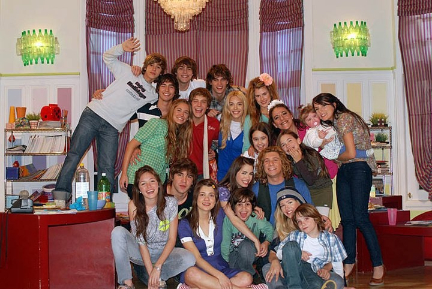
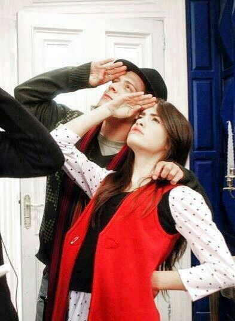
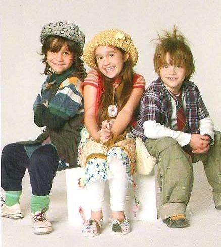
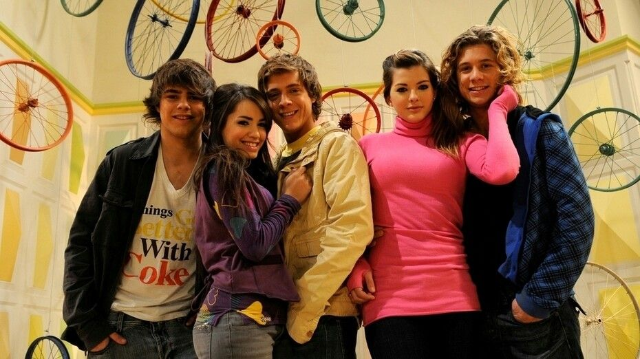

Temporada 1




La primera temporada de Casi Ángeles presenta a un grupo de chicos que viven en la Fundación BB, dirigida por Bartolomé Bedoya Agüero y Justina Merarda García.
La llegada de Cielo Mágico y Nicolás Bauer comienza a cambiar la vida de los jóvenes. A lo largo de la temporada se van descubriendo secretos, vínculos y situaciones que modifican la relación entre todos los personajes.
La música ocupa un lugar muy importante y los jóvenes forman Teen Angels, grupo integrado por Mar, Thiago, Jazmín, Tacho y Rama.
La historia también comienza a introducir el misterio de Eudamón y los elementos fantásticos que tendrán mayor importancia en las temporadas siguientes.